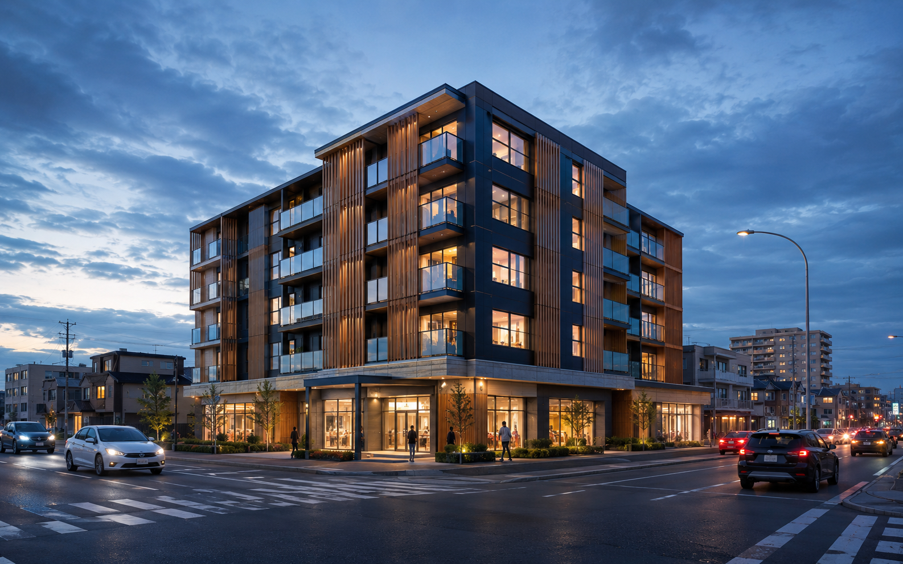
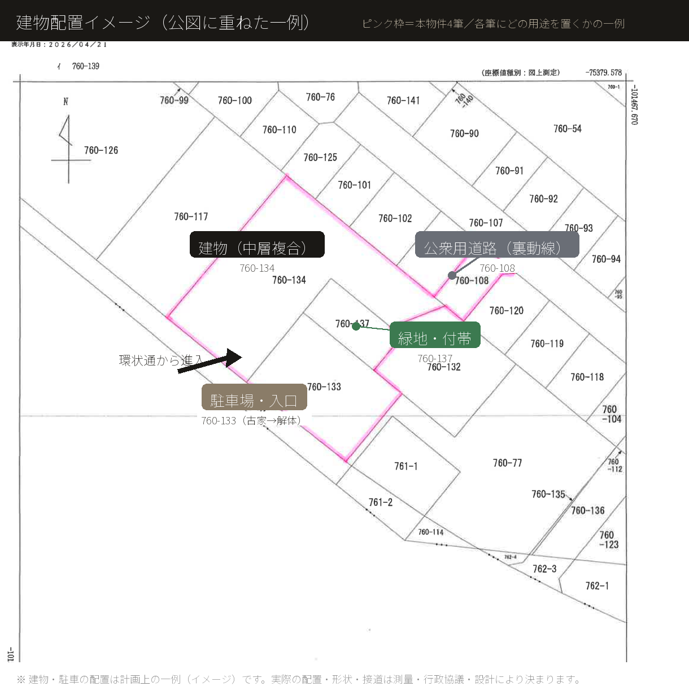
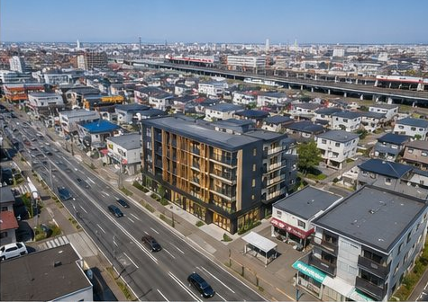
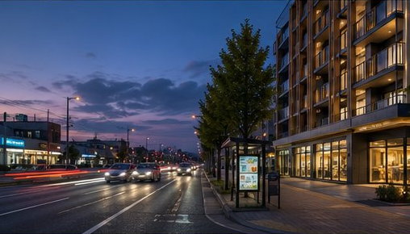
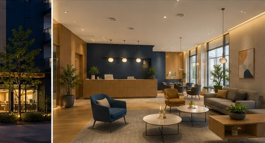
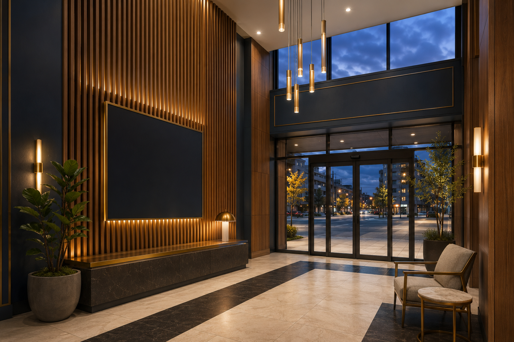
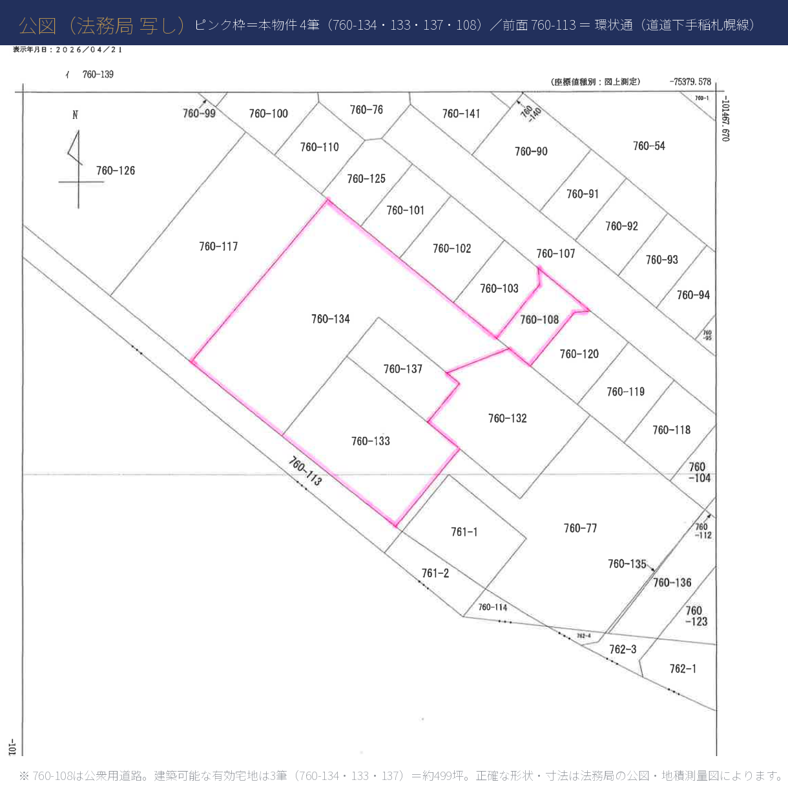

公示地価比準
（近隣商業・幹線沿い）
（近隣商業・幹線沿い）
約46万円/坪
札幌市西区八軒6条東5丁目。主要幹線「環状通（道道下手稲札幌線）」に面する、約535坪（4筆一団）のまとまった用地。医療・福祉、店舗・商業、住宅・複合——構想を、そのまま形にできる近隣商業の用地です。







環状通の交通量・視認性を活かした低層の商業／医療モール案です。前面の接道と平面駐車を確保し、ドラッグストア・スーパー・クリニック・飲食などの集積に適します。容積に余力を残し、段階開発や将来の増築にも対応できます。
※ ロードサイド商業プランの完成予想パースは準備中です。
※ 掲載のパースはすべて完成予想イメージ（CG）です。建物の形状・規模・配置、土地の区画（地型）、前面道路、周辺の建物・街並み等は実際とは異なり、現況に存しないものを含みます。用途・規模・必要許認可は建築基準法・関係条例・地区計画・行政協議により確認が必要です。
| 所在地 | 北海道札幌市西区八軒六条東五丁目 ※地番（760-133 ほか）等の詳細はお問い合わせください |
|---|---|
| 交通 | JR学園都市線「八軒」駅 徒歩約8分／前面 環状通にバス停「八軒6条東5丁目」 地下鉄南北線「北24条」・JR/地下鉄「琴似」方面へバス便、札幌都心へJR・バス・車でアクセス |
| 販売価格 | 応談（お問い合わせください） 公示地価比準による参考レンジは「開発スケール・市況データ」内に記載 |
| 土地面積 | 約1,769㎡（約535坪・4筆合算） 内訳：760-134 畑991㎡／760-133 宅地488㎡／760-137 畑170㎡／760-108 公衆用道路120㎡。うち公衆用道路を除く建築可能な有効宅地は約1,649㎡（約499坪）。地番・範囲の詳細は要確認。 |
| 地目 | 宅地・畑（現況） |
| 用途地域 | 近隣商業地域（特別用途：第三種小売店舗地区） |
| 建蔽率 / 容積率 | 建蔽率 60% ／ 容積率 200% |
| 高度地区 / 防火 | 33m 高度地区 ／ 準防火地域 |
| 日影規制 | 4時間／2.5時間（測定面 +4m） |
| 前面道路 | 環状通（道道下手稲札幌線） |
| 権利 | 所有権（共有を含む） |
| 現況 / 引渡し | 居宅・車庫等あり（古家付き）／ 現況渡し・解体更地渡しは相談 |
| 取引態様 | 媒介 |
※ 上記は現時点で確認できる情報に基づく概要です。地番・面積の内訳、権利関係（共有者）、現況建物の取扱い、引渡条件等の詳細・最新の状況はお問い合わせください。
Development land for sale in Hachiken, Nishi-ku, Sapporo, Hokkaido, Japan. Fronting the Kanjo-dori arterial road, approx. 8-min walk from JR “Hachiken” Station. Total site approx. 1,769 m² over 4 lots (approx. 535 tsubo); buildable land approx. 1,649 m² / 499 tsubo (excl. a public-road lot). Neighborhood-commercial zoning, FAR 200% / building coverage 60%, freehold. Current condition: existing house/garage (old buildings); demolition / vacant-lot delivery negotiable. The zoning permits a wide range of uses — residential (apartment buildings of 3+ units), retail/commercial, office, medical/welfare and more — suitable for owner-development, leasing, subdivision or fund-led projects. Note: under the district plan, detached houses, small apartments (2 units or fewer), hotels/inns and driving schools are not permitted. Asking price on application. Please contact us below for details.
※ 規模・用途・収益等の記載は計画上の目安であり、実現性・採算を保証するものではありません。投資判断はお客様ご自身の責任で行ってください。本ページは投資勧誘を目的とするものではありません。
| MINIMUM小規模 | STANDARD中規模 | MAXIMUM容積フル活用 | |
|---|---|---|---|
| 延床面積（想定） | 約250〜500㎡ （約75〜150坪） | 約1,650㎡ （約499坪） | 約3,300㎡ （約998坪） |
| 容積消化の目安 | 〜15%程度 | 約50% | 上限まで |
| 想定構造・階数 | 木造 / RC 1〜2階 | RC 2〜3階 | RC造 4〜5階 |
| 用途イメージ（例） | ロードサイド店舗・クリニック、小規模オフィス、物販・サービス店舗 等 | 共同住宅（マンション）、複合店舗、クリニックモール、福祉施設、住宅型施設 等 | 中型複合（商業＋住宅）、大規模賃貸住宅、中規模の医療・介護施設 等 |
| 建築費の目安 （RC造・参考概算） | 約1〜2億円 | 約6〜8億円 | 約12〜16億円 |
| 駐車台数（想定） | 10〜15台 | 20〜30台 | 40〜50台 |
| 将来拡張余地 | 大（残容積 多） | 中（残容積 約50%） | 小（容積ほぼ消化） |
※ 上表は用途を問わない規模感の目安です。容積率200%・有効宅地約1,649㎡（約499坪・公衆用道路を除く）を前提とした延床上限は約3,298㎡（約998坪）、建築面積上限は建蔽率60%で約989㎡（約299坪）です。建築費は北海道のRC造実勢坪単価（後述）に想定延床を乗じた参考概算で、設備・仕様により変動し、正式見積は設計・施工会社の確定によります。前面道路幅員・各種法規制・特別用途地区により実際の計画規模は変わります。
| 用途地域 | 近隣商業地域（特別用途：第三種小売店舗地区） |
|---|---|
| 建蔽率 / 容積率 | 建蔽率 60%（最大建築面積 約989㎡）／ 容積率 200%（最大延床 約3,298㎡・約998坪） |
| 高度地区 / 防火 | 33m高度地区 ／ 準防火地域 |
| 日影規制 | 4時間／2.5時間（測定面 +4m） |
| 前面道路 | 環状通（道道下手稲札幌線） |
| 計画可能用途 | 店舗・医療・福祉・住宅・複合 ほか／用途・形態・規模は協議・行政確認 |
| 権利 / 現況 | 所有権（共有を含む）／ 居宅・車庫等あり（古家付き・現況渡し／更地渡しは相談） |
※ 上記は公示地価（八軒・近隣商業／幹線沿い 約140,000円/㎡）を比準した参考レンジです。約46万円/坪 × 有効宅地 約499坪（4筆合算は約535坪）を基準に、まとまった規模・現況（古家解体の要否・地目・共有関係）等を勘案したもので、確定価格ではありません。実際の販売価格・取引条件は売主・取扱会社との協議によります（販売価格は「応談」）。地価・調整は価格の考え方を示す参考であり、正式な不動産鑑定評価ではありません。
為替・資源・株価・金利など主要な市場指標を自動取得し、加重合成した当社オリジナルの建設コスト指標です（基準：2022-04-01 = 1.000）。建設コストの上昇圧力を示し、土地取得コストにも波及します。下表は最新の自動取得データに基づく現在値で、生データは自社の計測システムで日次更新・確認できます。
※ MCI（RC造）は当社オリジナルのマクロ計測指標で、Yahoo Finance系の公開市場データを自動取得して日次で算定しています（基準 2022-04＝1.000、±35%キャップ）。将来値は一定の前提に基づく参考シナリオであり、確定値・保証値ではありません。正式な建設費見積は設計・施工会社により確定します。
※ 掲載の地価・建築費・規模・費用・指数等は、公的データおよび自社の想定・推計に基づく参考情報であり、正式な不動産鑑定評価・確定見積ではありません。将来の価格・収益・採算を保証するものではなく、投資勧誘を目的とするものでもありません。投資判断はお客様ご自身の責任で行ってください。最新の数値・詳細条件は取扱不動産会社へご確認ください。

| 760-134 | 畑 991㎡（約300坪） |
|---|---|
| 760-133 | 宅地 488㎡（約148坪）／居宅・車庫等あり（古家） |
| 760-137 | 畑 170㎡（約51坪） |
| 760-108 | 公衆用道路 120㎡（約36坪） |
| 合計 | 4筆合算 約1,769㎡（約535坪）／うち建築可能な有効宅地 約1,649㎡（約499坪） |
※ 周辺の位置関係は上記の地図（Google／OpenStreetMap）をご参照ください。現地・周辺の写真は別途ご用意・ご案内いたします。距離・所要時間は目安です。
| 担当 | 大下 甚 |
|---|---|
| お問い合わせ先 | info@tamjump.com |
| 取扱不動産会社 | 株式会社ウェルト |
| 所在地 | 〒060-0061 北海道札幌市中央区南1条西11丁目1 みたか南一ビル |
| TEL / FAX | 011-212-1601 ／ 011-212-1602 |
| Web | http://www.welt2015.co.jp |
| 免許番号 | 宅地建物取引業 北海道知事 石狩(3)第8339号 |
| 取引態様 | 媒介 |